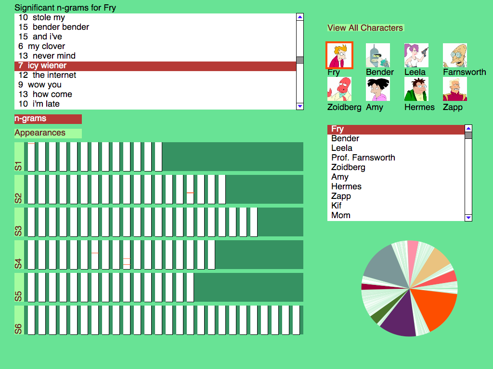

CS 424 Project 2
Vivek Hariharan
Jenny Kinahan
Camillo Lugaresi
About
The main purpose of this application is to give the ability to view the transcript data for the TV series Futurama. The application can view season and episode data in the form of graph and pie charts along with textual views for each season. N-Grams are also produced in order to view the most commonly used quotes for each character. Characters can be selected in two different ways. The main characters can be viewed via picture icons and the "other" characters can be selected textually.
How we Wrote the Program:
Data Acquisition:
The data for the project was obtained from the following website http://theinfosphere.org/Episode_Transcript_Listing that has scripts for each episode in the Futurama series. We built a crawler to crawl the website to get the individual script files. For the crawler we made use of a DOM (Document Object Model) parser to parse the html files and extract from it the characters name, timestamp, character url and dialog. For the DOM parsing we made use of JDOM (http://www.jdom.org/) a java library for dom parsing.
Processing the Data:
The raw data from the html files was stored in tab separated files for each episode of the series. In order to visualize the importance of each character, we precomputed the number of dialogues for each character at a episode, season and series level. These statistics were stored in the form of files and later loaded into memory on Processing.
N-grams
To identify the catchphrases and significant words for each character, I decided to try my hand at some NLP and statistics. Instead of sticking to words and sentences as specified, I decided to work with n-grams: this allows the program to find interesting phrases which are not complete sentences (e.g., all the instances when Fry is asked to deliver a pizza to "Icy Wiener").
The processing takes several steps.
- First, ngram.py scans all transcripts, collecting all n-grams present in the dialogue. To limit n, n-grams are detected within a single dialogue line at a time.
- Then a pruning step is performed. Singleton n-grams are removed, as well as n-grams which, for their occurrence count, are not maximal in the substring order. In other words, if the n-gram "NLP is fun for the whole family" occurs 5 times, and the n-gram "NLP is fun" also occurs 5 times, then that means all occurrences of the latter are in the context of the latter, so we only keep the longest of the two. But if "NLP is fun" occurs 6 or more times, we keep it.
- The remaining n-grams are printed to a series of files, each containing n-grams for a specific n, e.g. futurama-5-grams.txt.
We want to eliminate very common n-grams even if their frequency is statistically significant for a character. For instance, the fact that Fry uses the word "I" a lot compared to the other characters is statistically significant, and may be considered interesting, but for this application we wanted something a little more characteristic. Therefore, I decided to compile a list of the most frequent n-grams in English speech for low values of n. Unfortunately, most language corpora are not publicly available, which means I was not allowed to use them.
Two ngram resources are freely available on the web. Microsoft Research has a web service where one can query for the frequency of an n-gram, based on the entire set of documents indexed by Bing. Google has the Google N-grams site, which is not really useful for specific queries, but allows researchers to download several (huge) data sets.
Microsoft's web service would have been more convenient to use, but unfortunately it requires an access token, and they never got back to me after I requested one, so I decided to go with Google's data.
Google's data set is based on books published across the years. I decided to use the English Fiction data set, since it should be closer to the language used in Futurama, and more dialogue-heavy than the other datasets. (Ideally I would have used a dialogue-only corpus, but all such corpora I could fing - such as CallHome or Switchboard - require an expensive license to access them.)
I downloaded the data for 1, 2 and 3-grams, totaling around 38 GB (compressed). Then I used a script - mostngram.sh - to generate lists of the most frequent n-grams for n in 1,2,3. To limit the amount of data to process, and to ensure that modern language is considered, I only considered entires for the year 2009.
The script ngram-stats.py takes these two data sets (the frequent n-grams in Futurama, and the frequent n-grams in English), and uses them to identify n-grams that a character uses with a significatively high frequency.
- The script goes through all transcripts again, collecting separate lists of frequent n-grams for each character (only considering the n-grams that were selected in the first pass by ngram.py), and recording the location of each occurrence of each of these n-grams. This is done in a separate pass over the data because ngram.py takes a long time and lots of memory to run as it is, and doing the detailed scan in a second pass considering only a pre-selected list of n-grams makes things much faster. Also, this allowed me to tweak the statistics code many times without having to rerun the most expensive part of the data collection.
- The information from the Google data is used to mark each n-gram as either common or uncommon. This is used by the application to load only the uncommon ones. I decided to leave the common ones in the data as well, in case someone wants to look at them in the future (e.g., see what was mentioned before about Fry's usage of the word "I").
- Then, for each character, a test of statistical significance is performed for each of that character's frequent n-grams. The null hypothesis is that the frequency for the ngram in that character's speech is the same as that across all other characters. The research hypothesis is that it is higher. For the underlying statistical model, we treat each word position as a Bernoullian random variable, which takes the value 1 if the given n-gram begins at that position, 0 if it does not. Note that for n > 1 this means that there is some interdependence between sample points, since if the n-gram "statistics is magic" begins at position 459, then it cannot begin at 460 or 461. This problem could be avoided by considering each dialogue line as a sample point, and having the random variable be 1 if the line contains the n-gram, and 0 if it does not; or the variable could be a count of n-gram occurrences within the line, but then it would no longer have Bernoullian distribution. In any case, I decided to stick with the simplest model to implement, which turned out to give good results even though it is a bit lacking in rigor.
- For the test of statistical significance, I used Welch's t-test; this is a variant of Student's t-test which can be used when the variance differs between samples, and not just the mean. This is indeed our case, since the variance of a Bernoullian distribution is p*(1-p).
- The threshold for significance is p-value < 0.05: in other words, an n-gram is considered significant for a character if it has a higher frequency than over the other characters, and if the probability of that being the case if the distribution were the same as for all other characters is less than 0.05.
- The script writes out a list of statistically significant n-grams for each character, and a new list of all significant n-grams annotated with the locations of occurrence in the transcripts.
The program then loads this data and uses it to display a list of significant n-grams for a chosen character, and visually display the occurrences over the episodes. The list is currently sorted by n-gram length first and by count second; I would have liked to provide the ability to sort it in different ways in the interface, but time ran short.
Layout
The layout of the project was based off of a view controller which allowed for quick and easy updates. Along with the animation the program updates very cleanly with much attention payed to speed and efficiency. We wanted to stay away from other premade libraries as much as possible. Our button list box, pie chart, as well as other animated objects were written by ourselves in order to keep the size down as well as staying away from relying on other code. The seasons can be viewed individually or as a whole series. The characters can be selected via image or text box. The line data for each season can be shown upon clicking a particular season.